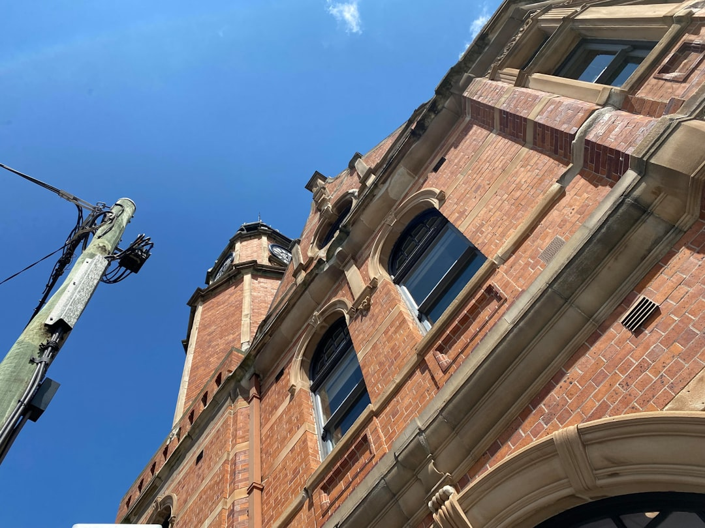

For homeowners comparing renovation builders sydney options, the practical question is how clearly the project can be scoped before a site visit, quote and contract decision.
Renovation Builders Sydney Explained
Renovation Sydney frames the first decision as a project type question, because a terrace under a conservation overlay, a second storey addition and a beachside kitchen do not ask the same things of a builder. That is a useful lens for comparing renovation builders sydney choices without pretending that every quote begins from the same brief.
The published service paths are whole home renovation, kitchen renovation, bathroom renovation, extension, granny flat work, and heritage or terrace work. Those labels are not just menu items. They help separate cosmetic updating from layout change, services upgrades, waterproofing, structure and approvals.
Before asking for pricing, write down the room or rooms involved, what no longer works, whether the layout is changing, whether structural work seems likely and whether access, strata, heritage or council approval may affect the job. A builder can price more usefully when those unknowns are visible early.
Who This Applies To
This guide is for Sydney homeowners who are past browsing ideas but not yet ready to sign a building contract. It is most relevant when the renovation may involve more than surface finishes, such as a whole home reconfiguration, a kitchen with changed services, a bathroom layout change, an extension, a granny flat, or heritage and terrace constraints.
Apartment owners should add access, strata rules and work hours to the early question list. Owners of older terraces should raise heritage or conservation limits before design decisions harden. Homeowners planning larger residential renovations should ask how approvals, structural work and finishes will be sequenced before treating a number as comparable.
For a broader companion overview of whole dwelling decisions, the home renovations Sydney planning guide keeps the focus on scope, quote readiness and the owner questions that sit before builder selection.
What To Put In A Quote Brief
A useful quote brief does not need to be polished. It needs enough detail for the contractor to see the likely variables. Include the suburb, property type, rooms affected, preferred outcome, known defects, access notes, budget range and any reason approvals may be involved.
- For kitchens: note whether cabinetry, benchtops, appliances, plumbing or electrical points are moving.
- For bathrooms: state whether the layout stays the same, whether the room is being enlarged and the fixture quality expected.
- For whole homes: separate layout reconfiguration, modern services and finishes so the price is not treated as one vague allowance.
- For extensions: ask what design, approval and structural information is needed before a fixed price can be offered.
The money page is clear that the reliable figure is a written fixed price quote for the specific home. That makes quote comparison less about chasing the lowest early number and more about checking whether the same scope, exclusions, programme and finish level have been priced.
Approval And Contract Questions
Renovation builders sydney homeowners speak with should be able to explain what needs to be clarified before work begins. The source page highlights builder credentials, insurance details, written scope, written contract terms, council pathways, waterproofing and structural work as issues to consider upfront.
Ask direct questions in plain language. What approval path may apply? What drawings or engineering information are needed before the quote is firm? What is excluded? Who is responsible for waterproofing sign off? What happens if hidden conditions are found? What programme is being priced?
For bathrooms, waterproofing is not a decorative finish. The source page states that waterproofing to Australian Standard AS 3740 is a non negotiable part of any compliant bathroom renovation. For structural or approval heavy work, treat the early meeting as a test of process clarity as much as taste or portfolio fit.
Reading Cost Signals Without Overclaiming
The available cost guidance is deliberately broad. A cosmetic refresh of a few rooms can sit in the tens of thousands, while a full whole home renovation with structural change in Sydney commonly runs from around $150,000 into several hundred thousands. Kitchen and bathroom costs move with layout change, materials, services updates and fixture choices.
That range is wide because renovation pricing is sensitive to the existing building. Moving plumbing, changing electrical points, enlarging a bathroom, adding custom joinery, choosing premium tiling or opening structural walls can change the job category. The same suburb name does not make two houses comparable.
Use early numbers as sorting tools, not promises. If the scope includes approvals, structure, heritage issues or difficult access, ask what information must be checked before the quote becomes a contract price.
- Name the scope. Write the rooms, desired outcome, known constraints and rough budget before asking for a site visit.
- Separate finish from structure. Identify whether the work is cosmetic, layout changing, services related, structural or approval dependent.
- Ask for written detail. Compare quotes by scope, price, programme and exclusions rather than by headline number alone.
- Check compliance items. For bathrooms, confirm how waterproofing to AS 3740 is handled in the quoted work.
| Project type | Early question | Quote risk to clarify |
|---|---|---|
| Cosmetic room refresh | Are layout and services staying put? | Finish allowances and exclusions |
| Kitchen renovation | Are cabinetry, appliances, plumbing or electrical points moving? | Joinery, benchtop and services costs |
| Bathroom renovation | Is the layout changing or the room being enlarged? | Waterproofing, tiling extent and fixtures |
| Whole home renovation | Is structure or layout reconfiguration involved? | Approvals, programme, exclusions and staged work |
| Extension or terrace work | Are council, heritage or structural constraints likely? | Design information needed before fixed pricing |
This guide covers Sydney renovation scoping, quote preparation, approval questions, contract checks and cost signals for homeowners comparing builders.